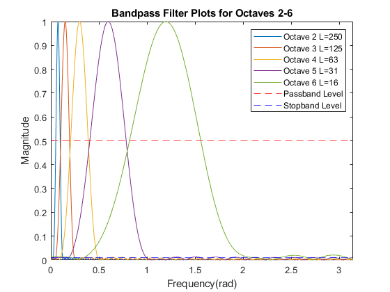

Section 5.2 of P-14 - Tyson Skogerboe u1174177
Contents
Section 5.1
% | Octave | Keys | Lower f (Hz) | Upper f (Hz) | Center f (Hz) | Lower w (rad/sample) | Upper w (rad/sample) | Center w (rad/sample) | % | -----: | :---: | -----------: | -----------: | ------------: | -------------------: | -------------------: | --------------------: | % | 2 | 16–27 | 65.406 Hz | 123.471 Hz | 94.439 Hz | 0.051370 | 0.096974 | 0.074172 | % | 3 | 28–39 | 130.813 Hz | 246.942 Hz | 188.877 Hz | 0.102740 | 0.193948 | 0.148344 | % | 4 | 40–51 | 261.626 Hz | 493.883 Hz | 377.755 Hz | 0.205480 | 0.387896 | 0.296688 | % | 5 | 52–63 | 523.251 Hz | 987.767 Hz | 755.509 Hz | 0.410960 | 0.775790 | 0.593375 | % | 6 | 64–75 | 1046.502 Hz | 1975.533 Hz | 1511.018 Hz | 0.821921 | 1.551580 | 1.186751 | run("main5_1.m"); % Run section 5.1 to gather table values
Section 5.2
% a. See function 1 for the function used in the following part used to % determine the Bandpass filters for each octave. % b. Trial and Error Filter Design figure; L2 = 250; % Determined Length L2 for Octave 2 [hoct2, Hoct2] = BPFilter(L2, OctcenterHz(2), fs); % BandPass Filter for Octave 2 L3 = 125; % Determined Length L3 for Octave 3 [hoct3, Hoct3] = BPFilter(L3, OctcenterHz(3), fs); % BandPass Filter for Octave 3 L4 = 63; % Determined Length L4 for Octave 4 [hoct4, Hoct4] = BPFilter(L4, OctcenterHz(4), fs); % BandPass Filter for Octave 4 L5 = 31; % Determined Length L5 for Octave 5 [hoct5, Hoct5] = BPFilter(L5, OctcenterHz(5), fs); % BandPass Filter for Octave 5 L6 = 16; % Determined Length L6 for Octave 6 [hoct6, Hoct6] = BPFilter(L6, OctcenterHz(6), fs); % BandPass Filter for Octave 6 yline(0.5, '--r'); yline(0.01, '--bl'); legend('Octave 2 L=250', 'Octave 3 L=125', 'Octave 4 L=63', 'Octave 5 L=31', 'Octave 6 L=16', 'Passband Level', 'Stopband Level'); hold off; % Function 1 - scaling a bandpass filter based on filter size, center % frequency, and sampling frequency. function [hscaled, Hscaled] = BPFilter(L, Fc, Fs) n = 0:1:L-1; N = 8182; wc = 2*pi*Fc/Fs; h = (0.54 - 0.46*cos(2*pi*n/(L-1))) .* cos(wc*(n - (L-1)/2)); H = freqz(h,1,N); beta = 1 / max(abs(H)); hscaled = beta * h; Hscaled = freqz(hscaled,1,N); w = 0:pi/(N-1):pi; plot(w, abs(Hscaled)); hold on; xlim([0 pi]); xlabel('Frequency(rad)'); ylabel('Magnitude'); title('Bandpass Filter Plots for Octaves 2-6'); end